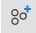

Map¶
Control all the main functionality in the map view using the icons in the right hand menu.

When an icon is active the background changes from gray to black and new features will continue to be added to the map until it is no longer active. To de-activate a function, either press Esc when the cursor is in the map area, click again on the same icon or click
.
Fit the map window to the project¶
To quickly home the map to include all of the sites in the project, click 
Add new network sites¶
To add new network sites, click  which opens the following window:
which opens the following window:
Network Site Mode on the Map¶
Set the height of the sites to be added, then click in the map to place sites. If the coordinates are known tick Enter coordinates? and type in the coordinates.
Use the Site Name Template to automatically increment the site name number for each new site.
To enter coordinates use a comma to separate the Latitude and Longitude
Add new subscriber sites¶
To add new subscriber sites, click  which opens the following window:
Subscriber Site Mode on the Map¶
Set the height of the sites to be added, then click in the map to place sites. If the coordinates are known tick Enter coordinates? and type in the coordinates.
Use the Site Name Template to automatically increment the site name number for each new site.
To enter coordinates use a comma to separate the Latitude and Longitude
Add new PTP Link¶
To add new PTP Links, click  which opens the following window:
which opens the following window:
PTP Link Mode on the Map¶
Set the height of the antennas to be added, then click in the map to place the first site, then move the mouse to the other end of the link and click to place the second site, or select existing network site locations for one or both ends of the link. If the coordinates are known tick Enter coordinates? and type in the coordinates.
To enter coordinates use a comma to separate the Latitude and Longitude
Add new PMP Network Devices¶
To add new PMP Network Devices, click  which opens the following window:
which opens the following window:

PMP Network Device Mode on the Map¶
Set the height, Range Units and SM Range (the furthest point at which SMs will be connected) of the Network Devices to be added, then click in the map to place Network Devices. Click on a network site in the map to add network devices to an existing site or click anywhere to create both a network device and a network site at that location. To add multiple network devices to the same site click again on the site. Additional Network Devices will have their default Antenna Azimuth offset from the previous one by the beamwidth of the antenna or the Modeled Beamwidth if it has been set to a different value.
Add new Subscriber Module and PMP Link¶
To add new Subscriber Modules with a PMP Link to a Network Devices, click which opens the following window:
PMP Link Mode on the Map¶
Add Viewsheds¶
To add viewsheds to the map, click  and see Viewsheds.
and see Viewsheds.
Ruler¶
To measure distance and bearing on the map, click  and then select a starting location on the map and drag the cursor to the end location to see the range and bearing from the start point.
and then select a starting location on the map and drag the cursor to the end location to see the range and bearing from the start point.
Measured Distance using Ruler¶
Scale PMP ND Sector Display¶
To change the displayed size of the Network Device sectors on the map, click and then adjust the slider to change the displayed size of the PMP sectors in the map view. This does not change the SM Range or the valid range for attaching subscribers, but makes it easier to see individual sectors when the full size view has overlapping sectors. When the scaling is active the sector display icon will be highlighted in yellow.

Scale PMP Network Device Sector Display Size¶
General¶
To easily find a site or link on the map, type a search string into the filter box  in the top menu bar. To focus the map on the filtered objects, click
in the top menu bar. To focus the map on the filtered objects, click 
To select the objects to show on the map click in the top menu bar, all objects, except the subscriber site labels, are displayed by default, untick objects not required or tick Show Subscriber Site Labels.
These settings are used on all projects in the same browser session, but are not saved between browser sessions.
Map Display options¶
To change the map background, click on the map and use the radio buttons to choose between the different background options.
To show the locations of sites operated by Crown Castle, select the Crown Castle radio button. When on a low map resolution this shows the number of sites in an area. To see the individual sites zoom in to a higher resolution for the area required.
To create a Network Site at the location of a Crown Castle Site, select the Crown Castle icon , which will pop-up a menu showing information about the site and then click on hyperlink Create network site here.
Map Layers options¶
By default, link lines are colored to indicate whether or not their predicted performance meets requirements: red means performance is not acceptable. When a PTP Link is meeting the criteria the link is shown in green, for good Mesh links the link is shown in dark blue and for good PMP links the link is shown in light blue.
To reposition a site, simply select the site and drag it to the new location, then click . To return to the original location click . If the site has connected PMP links all the associated links will move with the site and the new path profiles are updated.
To select an individual ND when there are multiple overlapping sectors, use the up and down arrow keys to toggle through the sectors.
To reposition an individual ND from its central network site location, zoom into the area of the site and select the ND, the site icon will turn white, select the site icon and drag to the new position. The ND will move to the new position and path profiles for all connected subscriber modules will be updated automatically. The maximum distance an ND can be moved with respect to the network site is 100m.
To change the size or orientation of an ND, select the ND and then click the centre circle and drag to either change the range or orientation, or click one of the outside circles to change the beamwidth.
Map ND adjustments¶
Map Information Window¶
Click on a site, network device or PMP link and an information box will appear on the map containing a short summary of key details about the item. The information shown varies depending on the item selected.
Map Information Window for sites, network devices and PMP links¶
Creating PMP Network Ends¶
The first Network Device will use the default settings with an Antenna Azimuth of 0 degrees (North), subsequent Network Devices will use the settings of the first Network Device. Configure the first Network Device, using the Edit option, see PMP Network Devices, before adding additional network devices to the site. Additional Network Devices will have their default Antenna Azimuth offset from the previous one by the beamwidth of the antenna or the Modeled Beamwidth if it has been set to a different value.
Attaching Subscribers¶
The Attach subscribers command opens the Attach Subscribers dialog window, Attach Subscribers Page. This window displays the subscriber sites that are within range of the network device. Any subscriber sites that are not linked to a network device will be selected by default. Clicking OK in this dialog will create PMP links between the network device and the subscriber sites.